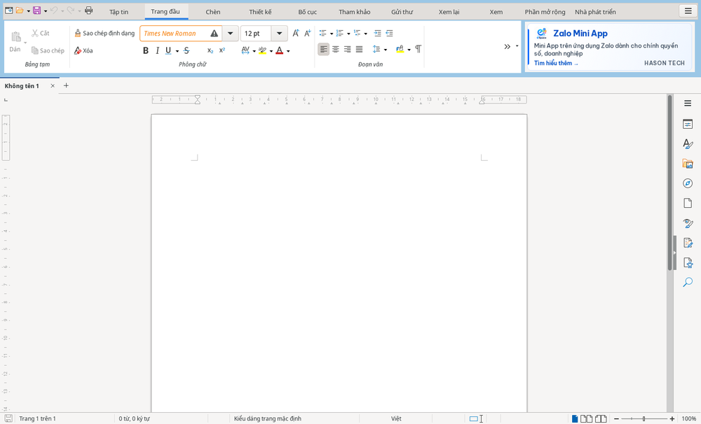

Bắt đầu
Giao diện theo thẻ
Giao diện được bật sẵn. Các lệnh được xếp thành nhóm trên các thẻ ở phía trên cửa sổ.

Tìm lệnh theo công việc
- : tạo, mở, lưu, in và xuất PDF.
- : định dạng chữ và đoạn văn; trong bảng tính có nút .
- : thêm bảng, ảnh và nội dung khác vào tài liệu.
- trong HST Writer: chủ đề, hình mờ, nền trang. Trong HST Slides: chủ đề, kích cỡ và nền trang chiếu.
- trong HST Writer: khổ giấy, lề trang, ngắt trang.
- trong HST Writer: mục lục, cước chú, trích dẫn. : trộn thư.
- và trong HST Sheets: thiết lập trang, vùng in; thư viện hàm, tên đã xác định, kiểm nghiệm công thức.
- , và trong HST Slides: mở bảng bên để đặt hiệu ứng; bắt đầu và thiết lập trình chiếu.
- : có lệnh .
- : có lệnh .
- trong HST Sheets: sắp xếp và lọc dữ liệu.
- : tìm các công cụ riêng của HST.
- : macro, VBA và Tùy chọn.
Thẻ và nhóm xếp theo thứ tự của Word, Excel và PowerPoint. Lệnh ít dùng không mất đi mà chuyển sang thẻ khác; không nhớ ở đâu thì dùng .
Thẻ hiện theo vùng chọn
Khi chọn một đối tượng, các thẻ của đối tượng đó hiện thêm ở cuối hàng thẻ và dải lệnh vẫn ở thẻ đang mở, như trong Microsoft Office. Bỏ chọn thì các thẻ này ẩn đi.
- Bảng: , .
- Ảnh: . Hình vẽ: .
- Biểu đồ: , . Bấm một lệnh ở hai thẻ này thì biểu đồ tự chuyển sang chế độ sửa.
Mẹo phím
Nhấn Alt rồi thả ra: các chữ nhỏ hiện trên từng thẻ. Nhấn chữ của thẻ để mở thẻ đó và xem chữ của từng lệnh, nhấn tiếp chữ của lệnh để chạy lệnh. Ví dụ trong HST Writer: Alt, H, 1 để in đậm.
- Esc lùi lại một bước; nhấn Alt lần nữa hoặc bấm chuột để tắt.
- Giữ Alt và nhấn chữ của thẻ (Alt+N) để mở thẳng thẻ đó.
- Chữ của thẻ theo Microsoft Office. Lệnh không có trong bảng chữ của Office được gán chữ còn trống khi mở thẻ.
Trang Tập tin
Bấm thẻ trên dải lệnh hoặc nhấn Alt+F (Windows, Linux) để mở trang Tập tin phủ toàn cửa sổ. Nhấn Esc hoặc bấm để quay lại tài liệu.
- : tạo tài liệu mới hoặc , mở tệp và . Bấm chuột phải vào một tệp để ghim hoặc xóa khỏi danh sách.
- , : chọn mẫu, tệp gần đây hoặc bấm để tìm tệp.
- : thuộc tính, vị trí, kích thước và trạng thái chữ ký số của tài liệu.
- : chọn định dạng (.docx, .xlsx, .pptx đứng đầu) rồi chọn tên và thư mục.
- , , , , : thực hiện ngay lệnh tương ứng.
Dùng phím mũi tên lên, xuống để di chuyển ở cột trái và Enter để chọn. Nếu dùng thanh menu cổ điển, menu vẫn hoạt động như cũ.
Tìm tính năng
Không nhớ một lệnh nằm ở thẻ nào? Mở ô rồi gõ tên tính năng:
- nhấn Shift+Esc (trên macOS: ⌥ Option+⌘+K);
- hoặc bấm nút ở bên phải thẻ (HST Writer, HST Sheets, HST Slides);
- hoặc chọn hay trên thanh menu cổ điển.
Gõ không dấu cũng được, chữ hoa hay chữ thường đều như nhau: chu ky tìm thấy , dinh dang tìm thấy các lệnh . Mỗi kết quả ghi rõ đường dẫn menu, ví dụ , nên bạn cũng biết lần sau tìm lệnh ở đâu. Công cụ HST cũng có trong kết quả, kể cả khi gõ từ khóa thay cho tên lệnh: cong van hay nd30 tìm thấy Văn bản hành chính, chuyen ma tìm thấy Chuyển TCVN3/VNI sang Unicode, token tìm thấy Thiết lập USB Token, vba tìm thấy Macro VBA.
Dùng phím mũi tên để chọn kết quả, Enter để chạy lệnh, Esc để đóng ô tìm. Ô tìm chỉ có khi đang mở tài liệu, không có ở trang bắt đầu.
Thanh bên
nằm ở bên phải cửa sổ. Trong HST Slides, bạn chọn bố cục trang chiếu, hiệu ứng chuyển trang và hiệu ứng động tại đây.
Dùng thanh menu cổ điển
- Chọn .
- Chọn giao diện có thanh menu cổ điển. Để dùng lại giao diện theo thẻ, chọn .